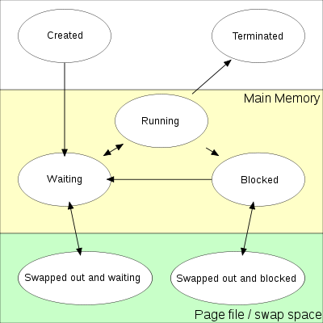

2. 운영체제¶
본 내용은 2014년 동아리 PINCOM에서 스터디그룹을 진행하면서 정리한 내용을 바탕으로 작성되어 있습니다.
2.1. 운영체제¶
운영체제는 컴퓨터를 유용하게 만드는 과정에서 필요한 다양한 방법을 제공하기 때문에 정의내리기 어렵다. 운영체제란 하드웨어 자원을 효율적으로 제어하고 응용프로그램을 동작시키기 위한 서비스를 제공하는 수동적인 소프트웨어(passive software)이다.
애초에 프로세스란 커널이 프로그램을 관리하기 위해 만든 개념으로서 커널이 프로세스가 될 수 없다. 또한 커널은 프로세스처럼 스케줄링 받지 않기 때문에 프로세스라 보기는 어렵다. 프로세스와 섞여 프로세스의 동작을 도와주는 역할을 한다.
운영체제(커널)이 하는 작업
- 주기적인 작업 : 프로세스 스케줄링 (타이머 인터럽트)
- 비주기적인 작업 : 마우스, 키보드 인터럽트, 트랩
- 요청된 작업 : 소프트웨어 인터럽트, 시스템 콜 (malloc)
커널처럼 프로그램을 돕는 사용자 모드의 프로세스는 시스템 소프트웨어라 부른다. 예를들면 윈도우 서비스가 있다.
2.1.1. 마이크로 커널¶
마이크로 커널은 핵심 운영체제 기능을 제공하는 작은 커널이다. 장점으로는 기능이 사용자 공간에 추가되므로 확장에 용이하다는 것이다. 또한 커널이 작으므로 복잡도가 적고 이러한 점이 영향을 적게 주어 OS를 보호하기 쉽게 만든다. 예를들면 윈도우는 마이크로 커널 모델과 유사하다. 서비스 프로세스를 처리하는 svchost.exe와 같은 프로세스는 운영체제와 역할이 비슷하지만 사용자 영역의 프로세스로 동작한다.
모놀리틱 커널은 임베디드 리눅스(Embedded Linux), 심비안(Symbian), 윈씨이(WinCE), 윈모바일(WinMobile) 등이 있고 마이크로 커널은 마이크로 오에스투(uCOS/2), 뉴클리어서(Nucleus), 렉스(Rex), 브이엑스웍스(VxWorks), 맥오에스(Mac OS) 등이 있다고 한다.
2.1.2. 컴퓨터 하드웨어¶
하드웨어는 공유 메모리에 대한 접근을 제공하는 공통 버스 를 통해 연결된 여러 개의 장치 제어기 와 하나 이상의 CPU로 구성 되어 있다. 각 장치 제어기는 컴퓨터에 연결된 하드웨어를 관리한다. 예를들면 마우스, 키보드, 모니터, 디스크 드라이브, 메모리 등이 있다. CPU와 장치 제어기는 메모리 사이클을 얻기 위해 경쟁하면서 병행 실행될 수 있다. 메모리 사이클을 관리하고 메모리를 관리하는 메모리 제어기 역시 존재한다.
2.1.3. 컴퓨터 부팅과정¶
- 컴퓨터 전원이 들어오면서 펌웨어(EEPROM 또는 ROM)에서 부트스트랩 프로그램 을 메모리로 읽어들여 실행한다. 레지스터, 장치 제어기 초기화 작업과 함께 운영체제 적재 작업에 들어간다.
- 하드 디스크의 MBR(Master Boot Record)를 메모리로 읽어들여 실행 가능한 운영체제를 조사한다.
- 운영체제를 메모리로 읽어들인 뒤 운영체제 실행 코드로 이동한 뒤 실행한다.
- 운영체제는 인터럽트를 대기하고 처리한다.
2.1.4. 인터럽트¶
인터럽트란 운영체제가 하던 일을 중단하고 요청받은 작업을 처리하는 것. 인터럽트 요청(IRQ, 시그널)이 발생하면 작업을 처리하던 중에 하던 일을 잠시 멈추고 인터럽트를 처리해야 한다. 작업이 오래걸리는 인터럽트라면 전용 프로세스를 생성하여 그 프로세스에서 처리하도록 할 수 있다. (리눅스에 존재함)
인터럽트 종류
- 하드웨어 인터럽트 : 하드웨어로 부터 전달되는 신호를 받아 수행되는 작업
- 소프트웨어 인터럽트 : 사용자 프로그램에서 시스템 콜(System call)을 호출했을때 수행되는 작업
인터럽트 처리과정
- 하드웨어 또는 소프트웨어 인터럽트 발생, 하던 작업을 잠시 멈춘다.
- 인터럽트 벡터(인터럽트 테이블)에 접근해 장치번호를 이용해 서비스 루틴을 찾는다.
- 복귀 주소와 현재 상태를 스택에 저장한 뒤 서비스 루틴을 실행한다.
- 실행이 끝나면 프로그램 카운터에 복귀주소를 적재한 뒤 본래 실행하던 명령어를 실행한다.
인터럽트의 예로는 네트워크 통신이 있을 수 있다. NIC에서 TCP 단위인 세그먼트를 이용해 메세지를 조립한 뒤 결과를 NIC 드라이버에 하드웨어 인터럽트를 발생 시킨다. 이후 NIC에서 소프트웨어 인터럽트를 발생시켜서 해당 스레드를 깨우게 된다.(READY 큐로 넣는다.)
2.1.5. 이중 동작 모드(Dual-Mode Operationg) 및 트랩, 인터럽트¶
사용자모드와 커널모드를 분리하여 OS를 보호하는 기법이다. OS를 보호하게되면 다른 자원에 접근하거나 OS에 문제가 발생할 확률이 줄어든다. 예를들어 이중 동작 모드가 없다면 동시에 파일쓰는 경우나 OS의 메모리를 덮는 불행한 경우가 발생할 수 있다. 현재 동작중인 모드는 하드웨어에 추가된 비트로 구분된다.
사용자와 커널모드의 큰 차이점은 특권명령(privileged instruction) 실행권한이다. 만약 사용자 모드에서 실행하게 된다면 불법적인 명령으로 간주해 트랩을 건다. 하지만 System Call역시 특권 명령으로 사용자 모드에서 사용할 수 있다.
트랩, 시스템콜, 인터럽트 은 커널모드로 전환되거나 서비스를 요청하는 방법이다. 트랩이 발생하는 경우는 불법적인 특권 명령을 발생시켰을 때도 있지만 사용자 모드에서 하드웨어에 잘못된 접근을 하였을 때에도 발생한다. 예를들면 0x0에 접근하였을 때 페이지 폴트가 발생하는 것은 하드웨어에서 트랩이 발생한다고 볼 수도 있다. 이때는 커널은 트랩을 처리하면서 사용자 프로그램 을 종료시킨다.
2.1.6. 폰노이만 아키텍처¶
폰노이만 구조 시스템은 전형적인 명령-실행 사이클을 갖는다.
- 메모리에서 명령을 인출(Fetch)하여 그 명령을 명령 레지스터(Instruction register)에 저장한다.
- 인출한 명령을 해독(Decode)하여 피연산자를 내부 레지스터에 저장한다.
- 피연산자에 대한 명령을 실행(Execute) 한다.
2.1.7. 입출력 구조(I/O Structure)¶
위에서 말했듯이 운영체제는 공통 버스와 CPU, 장치제어기로 구성된다. 장치 제어기는 하드웨어를 관리하며 CPU와 공용 버스를 통해 장치에 정보를 주고받는 역할을 한다. 장치 제어기는 하나 이상의 하드웨어를 관리할 수 있다. 예를 들어 SCSI(Small Computer Systems Interface)(스카시) 제어기에는 7개 이상의 장치를 붙일 수 있다. 또한 장치 제어기에는 약간의 로컬 버퍼 저장장치와 특수 목적용 레지스터 집합을 유지한다. 그리고 자신이 제어하는 주변장치와 자신의 로컬 버퍼 저장장치 사이의 데이터 전송을 담당한다.
운영체제는 각 장치 제어기마다 디바이스 드라이버(Device Driver)를 가지고 있다. 이 디바이스 드라이버(Device Driver) 는 장치 제어기의 동작을 이해하고 운영체제의 다른 부분들에게 장치에 대한 일관된 인터페이스를 제공 한다.
2.1.7.1. 드바이스 드라이버(Device Driver) 동작 & DMA(Direct memory Acces)¶
- 디바이스 드라이버는 장치 제어기의 적절한 레지스터에 필요한 값을 적재한다.
- 장치제어기는 수행할 동작이 무엇인지 레지스터를 조사한다.
- 동작을 수행한다. 예를들면 장치에서 데이터를 읽어들여 로컬버퍼에 저장한다.
- 동작이 완료됐음을 운영체제에 통보한다.
- 디바이스 드라이버는 데이터의 포인터나 상태정보와 제어를 운영체제에게 반환한다.
위 구조에서 대용량 파일 읽기을 하게 될 경우 메모리로 데이터를 복사하는 과정에서 인터럽트가 자주 발생하여 오버헤드가 심하다. 이를 위해 DMA 장치가 사용된다. DMA는 컴퓨터 내부 버스가 제공하는 기능으로 CPU를 거치지 않고 메모리로 직접 접근해 데이터를 복사하는 장치이다. 장치 제어기가 전송 작업을 실행하고 있는 동안 CPU는 다른 작업을 실행할 수 있다.
또는 시간이 오래걸리는 인터럽트같은 경우는 따로 전담 서비스, 프로세스를 두어 전담하여 처리하도록 할 수도 있다고 한다.
- DMA는 CPU로 부터 읽기/쓰기에 관련된 요청을 받는다.
- DMA는 장치제어기를 통해 장치에 접근하여 데이터를 읽어온 후 메모리에 직접 저장시킨다.
- 모든 I/O가 끝나면 운영체제에 인터럽트로 알린다.
2.1.8. 클러스터 컴퓨터¶
클러스터 컴퓨터란 2대 이상의 컴퓨터를 LAN이나 InfiniBend와 같은 고속의 상호 연결망(Interconnect)로 연결하여 작업을 분산해서 처리하는 시스템
2.1.9. 가상 머신(Virtual Machines)¶
가상 머신이란 한 컴퓨터의 하드웨어를 쪼개어 실제환경과 같은 가상의 여러개의 시스템을 제공하는 프로그램을 말한다. 대표적으로 인텔의 VMware, Hyper-V등이 있고 가상화를 제공하는 CPU로는 인텔 VT, AMV-V 등이 있다. x86 가상화 위키피디아
엄격하게 말하면 JVM(Java Virtual Machine)이나 .NET 프레임워크(일종의 플랫폼)는 하드웨어나 호스트 플랫폼에 구애받지않고 프로그램을 실행시키는 환경을 제공하는 점에선 가상머신이다.
장점
- OS개발 및 디버깅이 가능
- 다른 컴퓨터로 쉽게 이식할 수 있어서 관리가 편함
- 쉽게 다양한 개발 환경을 제공할 수 있음
2.2. 프로세스¶
프로그램 은 어떤 작업을 처리하기위해 생산된 결과물이며 디스크에 저장된 파일로 명령을 실행할 수 없는 상태의 저장물이다. 프로세스 는 프로그램을 메모리에 상주시켜 다음 실행할 명령을 지정하는 프로그램 카운터를 갖는 실행중인 프로그램이다.
2.2.1. 상태전이¶
프로세스의 상태전이는 다음과 같다.
새롭게 생성(NEW), 준비 완료(READY), 실행(RUNNING), 대기(WAITING, BLOCKED), 종료(TERMINATED) 등의 상태로 이루어 진다.
용어 해석 (프로세스 상태 전이 참조 사이트)
- 디스패치(scheduler dispatch) : 어떤 프로세스 스케줄러 가 해당 프로세스를 선택하여 실행 시키는 것
- 인터럽트(interrupt) : 실행중인 프로그램을 대기 상태로 전이시킨다. 우선순위가 높은 프로세스를 실행상태로 전이 시킨다. 예를들면 할당시간을 초과했을 때 인터럽트가 발생할 수 있다.
- I/O or Event Wait : 일반적으로 시스템 콜을 사용했을때 하드웨어에 입출력을 처리해야하는 상황이나 자식 프로세스를 대기해야되는 상황이면 프로세스는 대기상태로 전환되고 이때 준비완료 큐에 있는 다른 프로세스가 RUNNING 상태가 될 수 있다.
2.3. 프로세스 스케줄링¶
프로세스 스케줄링이란 여러개의 프로세스를 우선순위에 따라 실행하기 위해 계획을 세우는 것을 말한다. 일반적으로 시분할 시스템에서 스케줄링을 수행한다.
프로세스 스케줄링은 알고리즘, 큐, 프로세스 스케줄러로 구성된다. 큐의 종류에는 I/O 대기(I/O Waiting Queue), 자식 완료 대기, 준비완료 큐(I/O Ready Queue)가 있다. 프로세스 스케줄러는 특정 계획을 바탕으로 다음에 실행할 프로세스를 결정한다. 예를들어 한 프로세스가 실행중 I/O가 발생하면 WAITING 상태로 돌입하고 준비큐에 있는 다른 프로세스가 바로 실행될 수 있다.
스케줄링에는 프로세스 메모리에 적재할지 안할지 결정하는 장기 스케줄러 와 준비완료 큐에서 프로세스를 선택하는 단기 스케줄러 가 있다.
2.3.1. 프로세스 스케줄링 vs 스레드 스케줄링¶
스레드를 지원하는 운영체제에서는 운영체제는 프로세스가 아니라 커널 수준 스레드를 스케줄한다. 그러나 프로세스 스케줄링과 스레드 스케줄링은 상호 교환적으로 사용된다. 일반적인 스케줄링 개념을 논의할때는 프로세스 스케줄링 스레드에 국한될때는 스레드 스케줄링 이라고 부르기도 한다.
앞으로 설명할 부분에서 프로세스라는 표현을 스레드라고 생각하는 편이 좋다.
2.3.2. CPU 스케줄러(Short-term Schduler)¶
위에서 언급한 프로세스 스케줄러는 CPU 스케줄러 또는 단기(short term) 스케줄러를 뜻한다. 준비완료큐에서 프로세스를 선택하여 CPU를 할당하여 RUNNING상태로 만든다.
2.3.3. 준비완료 큐¶
준비완료 큐는 반드시 선입선출(FIFO)일 필요가 없다. 우선순위 큐, 트리, 리스트 등이 사용될 수 있다. 큐에 있는 내용들은 일반적으로 PCB (PEB)(Process Control Block)이라고 볼 수 있다.
2.3.4. 스케줄링 발생 조건 및 좋은 스케줄링의 판단 기준¶
- 한 프로세스가 실행 상태에서 대기 상태로 전환될 때(예를 들어, 입출력 요청이나 자식 프로세스 대기)
- 프로세스가 실행 상태에서 준비완료 상태로 전환될 때(예를 들어, 인터럽트가 발생할 때)
- 프로세스가 대기 상태에서 준비완료 상태로 전활될 때(예를들어, 입출력 종료 시)
- 프로세스가 종료할 때
시스템 콜이 발생하는 중 선점할 경우 커널 자료구조에 문제가 발생할 수 있다.
스케줄링의 복합적인 기준은 다음과 같다
- CPU 이용률
- 특정 프로세스 입장에서 처리량
- 총처리 시간 (준비완료 큐 대기, WATING 큐 대기, 실행한 시간)
- 준비완료 큐에서 대기 시간
- 처리 요청 후 응답시간
CPU 이용률과 처리량을 최대화하고 총처리 시간, 준비완료 큐에서 대기 시간, 처리 후 응답시간을 최소화 하는것이 좋다. 일반적으로 CPU-Bound 프로세스는 I/O-Bound 프로세스에 비해 우선순위가 낮다. 이는 호송 효과(호송 효과, Convoy effect)때문이다. CPU를 점유하는 CPU-Bound 프로세스 때문에 여러개의 I/O-Bound 프로세스가 기다리는 것을 뜻한다. I/O-Bound 프로세스를 먼저 처리하는 시나리오 비교했을때 CPU-Bound 프로세스를 먼저 처리하는 것은 CPU 이용률과 장비이용 효율을 낮춘다.
2.3.5. 디스패처(Dispatcher)¶
실제 CPU 스케줄러 내부에서 디스패처를 이용하여 프로세스를 실행상태로 바꾸기 위한 작업을 수행한다.
디스패처의 역할
- 현재 실행중이던 프로세스의 문맥을 저장하고 실행할 프로세스의 문맥을 레지스터에 로드한다.
- 시스템 콜에 의해서 전환된 커널 모드에서 다시 사용자 모드로 전환한다.
- 프로그램을 다시 시작하기 위해 사용자 프로그램의 적절한 위치로 이동(jump)하는 일
2.3.6. 스케줄링 알고리즘¶
CPU 버스트 시간, 입출력 버스트 시간은 실제 프로세스를 실행 했을때 걸리는 시간을 뜻한다.
1) 선입 선처리 스케줄링(FIFO Scheduling) : 비선점형 알고리즘으로 큐에 있는 순서대로 프로세스를 처리한다.
선입선처리 큐로 쉽게 구현할 수 있다. 새로운 프로세스는 큐의 끝에 삽입된다. CPU가 자유로운 상태가 되면 스케줄러에 의해 큐의 앞부분에 있는 프로세스를 제거하여 실행한다. 입출력 관련 시스템 콜 발생시 입출력 큐에 이동하게 된다.(스스로 WAITING 큐로 가는 것을 협조적, 비선점 이라고도 부른다)
선입선출 스케줄링의 단점은 다음과 같다.
- 호위 효과(Convoy Effect)에 의해 평균 대기시간이 길어질 수 있다.
- 시분할 시스템에 적절하지 못한 스케줄링이다. 모든 프로세스가 규칙적인 간격으로 CPU를 얻는 것이 중요하기 때문이다.
2) 최단 작업 우선 스케줄링(Shortest-Job-First Scheduling, SJF) : 다음 CPU 버스트 시간이 가장 짧은 프로세스를 선택하는 알고리즘이다.
이때 CPU 버스트 시간은 프로세스 전체의 버스트 길이가 아닌 다음 CPU 버스트 길이를 뜻한다. CPU 버스트 시간이 작은 프로세스에 CPU를 할당하기 때문에 Sortest-Job-First 라는 이름이 붙었다.
장점은 다움과 같다.
- 평균대기시간이 짧아진다.
다음 CPU 버스트 시간을 파악하는 것은 어렵다. 따라서 단기스케줄링보단 배치시스템의 장기스케줄링에서 사용된다. 왜냐하면 배치시스템에선 사용자가 작업시간을 기록하기 때문이다. 또 다른 방법은 이전 CPU 버스트 시간을 통해 다음 CPU 버스트 시간을 예측할 수 있다.
SJF는 선점형이 될 수도있고 비선점형이 될 수도 있다. 선점형일 경우 새로운 작업대기큐를 검사하여 더 작은 CPU 버스트를 갖는 프로세스를 먼저 처리할 수도 있다. 비선점일 경우 하던 작업을 먼저 처리하는 특성을 지닌다.
3) 우선순위 스케줄링(Priority Scheduling) : 우선순위가 높은 프로세스 순으로 처리한다.
우선순위를 결정하는 요소는 다음과 같다.
- 평균 또는 다음 CPU 버스트 시간
- 프로세스 시간제한
- 열린 파일의 수
- 차지하는 메모리의 량
최단 작업 우선 스케줄링 처럼 선점형일 수도 있고 비선점형일 수도 있다. 선점형 우선순위 스케줄링이라면 준비완료 큐에 들어오는 새로운 프로세스의 우선순위가 실행중인 프로세스보다 높다면 CPU를 선점한다. 비선점형 스케줄링이라면 현재 처리하던 작업을 완료한다.
우선순위 스케줄링의 문제
- 무기한 봉쇄 또는 기아 상태(starvation)가 발생할 수 있다.
기아문제 해결법
- 노화(aging)기법을 사용하여 오랜 시간 시스템에서 대기하는 프로세스의 우선순위를 증가시키는 방식이다.
4) 라운드 로빈 스케줄링(Round-Robin Scheduling) : CPU 스케줄러는 시간 할당량(time quantum) 또는 시간 조각(time slice)동안 프로세스를 실행하고 다음 프로세스에게 CPU를 할당하는 스케줄링 기법이다.
선점형이면서 FIFO Scheduling이라고 생각하면 편하다. 라운드 로빈 스케줄링은 시간 조각에 영향을 많이 받는 기법이다.
구현방법
- 라운드 로빈 스케줄링을 위해 기본적으로 선입선출 큐를 유지한다. 새로운 프로세스는 큐의 꼬리에 삽입한다.
- CPU 스케줄러는 큐의 앞부분의 프로세스를 선택한다.
- 인터럽트를 발생하는 타이머를 설정한 뒤 선택한 프로세스를 디스패치한다.
라운드 로빈 스케줄링의 대기 시간
- n개의 프로세스가 대기하고 있고 시간할당량이 t라면 각 프로세스는 자신의 다음 시간할당량 까지 (n-1)*t 시간 이상을 대기하지는 않는다.
시간 조각(time slice) 조건
- 시간 할당량이 너무 클 경우 선입선처리와 같아지며 실시간 처리가 되지 않는다.
- 시간 할당량이 너무 짧을 경우 문맥교환이 빈번히 일어나서 전체적인 프로세스 처리시간이 길어진다.
- 시간 할당량안에 CPU 버스트를 끝낸다면 평균 총처리 시간은 개선된다.
- 시간 할당량은 문맥교환 시간보단 커야한다.
2.4. 스레드(Thread)¶
스레드란 프로세스에서 명령어를 처리하는 최소한의 단위를 말한다. **예를들어 커피주문을 하나의 프로세스로 점원은 스레드로 볼 수 있다.
실제로 프로세스 스케줄링의 대상은 스레드의 문맥이 된다. 따라서 스레드가 blocked에 빠졌다고 해서 실제 스레드가 blocked이라고 생각하지말고 문맥만 blocked 상태구나~ 라고 생각하면된다.
2.4.1. 스레드 생성의 한계¶
스레드는 범용 레지스터, 프로그램 카운터, 스택등의 문맥을 가지게 된다. 스레드가 계속 생성될 경우 메모리가 스레드의 스택으로 가득 찰 것입니다. 따라서 스레드의 생성에는 한계가 있다. 스레드 생성의 한계
더 많은 스레드를 생성하고 싶다면 스택크기를 줄이면 된다.
2.4.2. 커널 수준 스레드 vs 커널 스레드¶
개념상 커널 수준 스레드는 스케줄링의 대상이 되는 스레드를 뜻하고 커널 스레드는 커널에서 인터럽트나 여유 메모리를 관리하기 위해 사용되는 특수한 스레드를 말한다.
2.4.3. 스레드의 장점¶
멀티 프로세스와 멀티 스레드의 차이점 기반으로 설명해도 좋을 듯하다.
- 동시성(반응성) - 동시에 여러개의 작업을 수행할 수 있다. 예를들면 GUI 프로그램에서 사용자의 응답과 동시에 처리를 할 수 있으므로 반응성이 좋다.
- 효율성(경제성) - 여러작업을 동시에 처리하기 위해 프로세스를 생성하는 것 보다 경제적이다. (프로세스 스케줄링시 발생하는 프로세스 문맥교환은 스레드 문맥교환보다 비용이 크다. 솔라리스 기준으로 5배 정도 오래 걸린다고 한다.)
- 자원공유 - 다수의 프로세스를 생성하면 프로세스 통신(IPC)를 위해 공유메모리나 메세지 전달 기법을 사용 및 명시적으로 처리해야 한다. 하지만 멀티 스레드에선 메모리의 모든 내용을 공유할 수 있기 때문에 구현이 보다 쉽다.
2.4.4. 사용자 수준 스레드 (다대일 모델)¶
유저 모드 라이브러리에서 생성되며 커널에 의해 스케줄링되지 않는 스레드이다. 장점으로는 런타임 라이브러리가 Context를 유지하기 때문에 스위칭이 필요없다. 단점으로는 블로킹 시스템콜을 호출할 경우 다른 스레드는 작업을 할 수 없다. 여러개의 사용자 수준 스레드가 하나의 커널 수준 스레드에 물려있다고 생각하면 쉽다.
2.4.5. 커널 수준 스레드 (일-대-일 모델)¶
커널 시스템 콜을 사용하여 생성될 수 있으며 커널에 의해 스케줄링된다. 장점으로는 멀티코어를 활용할 수 있어 속도가 빠르고 블로킹 시스템콜을 사용하더라도 문제가 발생하지 않는다. 단점으로는 커널스레드는 문맥교환 시간이 오래 걸린다. 예를들면 Windows NT, MACH, OS/2 등이 있다.
2.4.6. 커널 수준 스레드와 사용자 수준 스레드를 섞어서 사용 (다-대-다 모델)¶
실제로는 사용자 수준 스레드를 만든 후 커널 수준 스레드와 연결(Mapping)하여 사용한다. 여러개의 사용자 수준 스레드를 만들고 커널이 커널 수준 스레드를 스케줄링하고 커널 수준 스레드가 사용자 수준 스레드를 골라서 실행하는 방식이다. 커널 수준 스레드는 사용자 수준 스레드를 고르기 전 LWP라는 자료구조를 사용하게 된다. 따지고 보면 LWP는 커널 수준 스레드에 부속되어 있고 LWP에 유저모드 스레드를 부속시킨 뒤 사용자 수준의 스케줄링을 가능하도록 하게한다. (LWP = Lightweight Processes = 가상 처리기 = 가상 프로세서) 예를들면 Sun OS가 있다.
이 방식의 장점은 커널 수준 스레드만 사용했을 때보다 스레드 컨텍스트 비용이 줄어들고 사용자 수준 스레드만을 사용 했을때 블로킹 시스템콜의 약점을 극복한 모델이라는 것이다.
단 4개의 LWP가 봉쇄 되었을때 5번째 봉쇄 요청을 처리할 수 있는 스레드가 없다. 다른 LWP가 복귀하길 기다려야 할 것이다. 따라서 스케줄러 액티베이션 기법을 이용해서 극복하게 된다. 봉쇄된 시스템 콜이 발생했다는 사실을 업콜이라는 매커니즘을 통해 새로운 LWP를 생성해 처리하도록 한다. 이때 현재 봉쇄된 LWP를 반환하게 한다. 이후 봉쇄가 끝나면 다시 업콜을 통해 새로운 LWP를 생성한다.
2.5. 프로세스 동기화¶
2.5.1. 경쟁 상황(race condition)¶
생산자 소비자 문제에서 발생할 수 있는 상황이다. 멀티스레드 환경에서 동시에 2개의 프로세스가 자원에 접근하는 상황을 뜻한다. 동시 접근의 결과로 공유 데이터가 훼손될 수 있다. 즉 결과가 각 프로세스가 접근하는 순서에 의존한다. 이러한 경쟁상황의 문제점을 해결하기 위해 프로세스를 동기화 해야한다.
2.5.2. 임계영역(Critical-Section)¶
임계영역이란 다른 프로세스와 공유하는 변수를 변경하거나 테이블을 갱신하는 등의 작업을 하는 코드를 말한다.
- 임계영역을 보호하기 위해 필요한 개념
- entry section(진입 영역)
- exit section(진출 영역)
- remainder section(나머지 영역)
- 임계 영역 해결의 조건
- 상호배재(Mutual exclusive) - 임계영역에서 실행중인 프로세스가 있다면 진입할 수 없음
- 진행(progress) - 임계영역에 진입하고자 하는 프로세스를 결정하는데 참여하는 것
- 한정된 대기(bounded waiting) - 진입 지점에서 무기한 대기해서는 안됨
2.5.3. 임계영역 문제 해결법¶
피터슨의 해결법은 고전적인 방법으로 상호배제, 진행, 한정된 대기의 조건을 만족하는 해결법이다.
int turn; //진입할 순번
boolean flag[2]; //임계영역으로 진입할 준비가 됨
flag[i] = TRUE;
turn = j;
while(flag[j] && turn == j);
//임계영역
flag[i] = FALSE;
//나머지영역
세마포는 임계영역 문제를 해결할 수 있는 동기화 도구이다. 이때 임계영역 접근에 관련된 도구에는 세마포어와 뮤텍스가 있다. 뮤텍스는 이진 세마포어로서 하나의 자원을 동시에 1개의 프로세스만 사용할 수 있도록 제한하는 락이다.(1은 접근가능 0은 접근불가) 반면 세마포어는 동기화 대상인 자원의 개수가 2개 이상일때 사용한다. 세마포어는 자원의 할당개수를 카운팅하는 중요한 변수를 가지고 있다.
세마포어와 뮤텍스의 가장 큰 차이점은 동기화하는 자원(임계영역)의 개수이다. 세마포어는 여러개의 자원의 동기화를 관리하지만 뮤텍스는 오직 1개의 자원만 동기화한다.
void wait(int mutex);//현재 프로세스가 대기 상태로 됨
void signal(int mutex)//다른 프로세스를 깨움
void wait(semaphore *S){
S->pCount--;
if(S->pCount < 0){
//자신의 프로세스를 S->list에 넣는다.
block();
}
}
void signal(semaphore *S){
S->pCount++;
if(S->pCount <= 0){
// S->list에서 하나의 프로세스를 꺼낸다.
wakeup(P);
}
}
용어
- 세마포어는 유한한 개수의 자원에 대한 접근을 제어하는데 사용되는 락이다.
- 뮤텍스는 상호배제를 제공하는 락이다.
이때 wait는 바쁜대기로 구현된다. spinlock을 사용해서 CPU를 쓸데없이 점유한다. 따라서 wait를 위해 OS의 세마포 연관 대기 큐를 사용하여 프로세스를 봉쇄시키는 방식으로 구현할 수 있다. signal()을 호출하면 세마포 큐에서 대기중이던 프로세스를 준비완료 큐로 이동한다.
2.5.4. 교착상태(Deadlock)¶
두개의 스레드가 자원의 점유하고 있는 상태에서 서로의 자원이 점유 해제되기를 기다릴때 발생할 수 있는 상태이다.
대표적으로 식사하는 철학자 문제가 있다. 5명의 철학자가 동시에 왼쪽에 있는 젓가락을 집는다. 이후 오른쪽 젓가락을 집으려고 할때 이미 젓가락은 점유되고 있기 때문에 5명 모두 옆사람이 젓가락을 내려놓길 기다린다.
- 철학자 문제 해결
- 반드시 두개를 집을 수 있을때 집게한다. 즉 집는 함수를 임계영역에 넣어버린다.
- 비대칭 해결안으로 홀수 번호가 왼쪽을 집고 짝수 번호가 오른쪽을 집도록 한다.
- 교착상태 용어
요청 : 자원을 요청한다. 요청이 허용되지 않을 경우 대기 큐에서 대기한다. (다른 프로세스가 뮤텍스를 점유하고 있음, 세마포어 연관 대기 큐) 사용 : 자원에 대한 작업을 실행할 수 있다. (뮤텍스를 사용하고 있으므로 임계영역 실행) 방출 : 프로세스가 자원을 방출한다. (뮤텍스를 해제한다.)
- 교착상태 조건 (4가지 조건이 만족했을 경우 교착상태 발생)
- 상호배제 : 소유하려는 자원이 상호배제 될때
- 점유하며 대기 (hold-and-wait) : 자원을 소유한 상태에서 다른 자원을 소유하려고 대기할때
- 비선점 : 자원을 선점할 수 없을때
- 순환대기 : 프로세스들간에 사이클을 이루며 서로의 자원을 요청할때
- 자원 할당 그래프 (교착 상태를 이해하기 좋은 방법)
- 프로세스 또는 자원은 정점으로 나타내고 요청 또는 소유를 간선으로 나타낸다.
- 그래프가 사이클을 이루면 교착상태이다.
- 교착상태 해결방법
- 교착상태 예방 : 교착상태의 4가지 조건중 적어도 하나가 만족하지 않도록 개발한다.
- 교착상태 회피 : 프로세스가 실행중에 자원 요청순서를 파악한 뒤 현재 자원요청을 수락할지 지연할지 결정하는 방법이다. 즉 분석하여 교착상태를 방지하는 방식이다.
- 교착상태 회복 : 교착상태가 발생한 뒤에 회복하는 해결법이다. 예를들면 자원을 선점하도록 하거나 교착 상태가 풀릴때 까지 프로세스를 하나씩 종료하는 방식이 있다.
- 교착상태 탐지 : 교착상태를 회복하기 전에 먼저 교착상태가 발생했는지 시스템의 상태를 파악하는 방법이다.
- 교착상태 무시 : 교착상태를 무시하고 시스템을 운영하는 방법이다. 일반적인 운영체제가 교착상태 회피의 비용문제로 인해 이 방식을 선택한다.
2.5.4.1. 교착상태 회피¶
자원 할당 그래프 알고리즘
자원 할당 그래프 알고리즘은 예약간선을 도입해 시스템이 불안전 상태를 회피하는 알고리즘이다. 프로그램을 실행하기 전 프로그램이 미래에 예약할 자원을 조사한다. 그리고 자원 할당 그래프에 프로세스와 자원 사이에 예약 간선을 추가한다. 이후 프로그램이 실행되고 나서 예약 간선을 할당 간선을 바꿨을 때 안전상태인 경우 경우에만 자원을 할당 한다.
용어
- 안전 상태 : 프로세스가 요청하는 자원을 교착상태없이 모두 할당할 수 있는 상태이다.
- 불안전 상태 : 프로세스가 요청하는 자원때문에 언젠가 교착상태에 빠질 수 있는 상태를 뜻한다.
불안전 상태를 찾기 위해 사이클 탐지 알고리즘을 사용한다. 이 비용은 n^2이다.
2.5.4.2. 교착상태 탐지¶
대기 그래프
하나의 프로세스만 자원을 소유할 수 있는 경우에 대기 그래프를 활용하여 교착상태를 탐지할 수 있다. 대기 그래프란 자원 할당 그래프의 변형 그래프이다.
대기 그래프 생성 방법
- 자원할당 그래프에서 자원 노드를 하나씩 제거하면서 연관된 요청 간선과 할당 간선이 있다면 연관된 2개의 프로세스 사이에 새롭게 간선을 추가한다.
- 모든 자원 노드를 삭제했을때 대기그래프가 생성된다.
- 프로세스 사이의 간선이 사이클이 존재한다면 교착상태에 빠진 것이다.
대기 그래프 비용
- O(자원 노드의 수) + O(n^2) 이다. (n^2은 그래프에서 사이클을 탐지하는 알고리즘이다. n은 프로세스의 수)